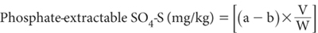
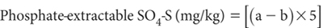

Ion chromatography offers an alternative analytical finish for the measurement of S in dilute, aqueous salt solutions. As the two IC technologies (chemical suppression of eluent conductivity and single-column with electronic suppression of eluent conductivity) give very similar results, only one Method Code has been allocated and one methodology described. For more details on the two competing IC technologies, see Methods 5A3a and 5A3b. The option described is based on chemically suppressed IC. The suppressor cartridge, packed with a high capacity cation exchange resin, chemically suppresses the background conductance of the eluent. It also converts the anionic species into species of higher conductance prior to the conductivity detector.
The main issue to overcome is the presence of relatively high concentration of orthophosphate ions that may interfere by causing a very large peak on the chromatogram, perhaps masking the following SO42– peak, particularly if SO4-S is at a low concentration.
The only sample preparation required after soil extraction is the removal of particulate matter >0.20 μm by filtration or centrifugation. Analysis can be completed sequentially within about 30 min or less, using a few mL of extract.
Ion Chromatograph
See relevant parts of Chapter 5 for details.
Reagent Water
Deionised or distilled water, analytically free of the anions of interest and containing no particles >0.20 μm.
Extracting Solution – 0.01 M Ca(H2PO4)2 at pH 4.0
As for Method 10B1.
Stock Sodium Bicarbonate Solution (100 mM NaHCO3)
Dissolve 8.40 g sodium bicarbonate (NaHCO3) in about 500 mL of deionised water in a 1.0 L volumetric flask. Make to the mark and mix well. Filter through a 0.20 μm filter and, if necessary, store at around 4°C for up to 4 weeks.
Stock Sodium Carbonate Solution (100 mM Na2CO3)
Dissolve 10.60 g of sodium carbonate (Na2CO3) in about 500 mL of deionised water in a 1.0 L volumetric flask. Make to the mark and mix well. Filter through a 0.20 μm filter and, if necessary, store at around 4°C for up to 4 weeks.
Daily Eluent (7.0 mM NaHCO3/0.5 mM Na2CO3)
To a 1.0 L volumetric flask add 70 mL of stock 100 mM sodium bicarbonate solution and 5 mL of 100 mM sodium carbonate solution and make to the mark with water. Mix well then degas by helium sparging (bubbling the chemically inert gas) through a liquid for about a minute. Prepare fresh daily.
Suppressor Regenerant Solution (0.25 M H2SO4)
Add 14 mL of 18 M H2SO4 to deionised water in a 1.0 L volumetric flask then make to volume.
Pump Self-flush Reagent (15% Methanol)
Dilute 30 mL of methanol (CH3OH) to 200 mL directly in a labelled Schott bottle. Record on the bottle a one-month expiry date.
Column Storage Reagent (25% Acetonitrile)
Dilute 25 mL of acetonitrile to 100 mL with water in a Schott bottle.
Sulfate Standard Solutions
As for Method 10B1.
Prepare particulate-free soil extracts as described for Method 10B1. Briefly, this involves 20.0 g of air-dry soil (<2 mm), 100 mL of Extracting Solution [0.01 M Ca(H2PO4)2 at pH 4.0], and shake end-over-end for 17 h at 25°C. Filter (<0.20 μm) an aliquot for IC analysis.
Set up the IC for aqueous SO4-S analysis, in the presence of Ca(H2PO4)2, guided by recommendations from the instrument’s manufacturer.
Perform other essential analytical functions. For example, switch on the computer, load the analytical software, ensure all modules are powered up, and check that the correct column and suppressor are in place. Next add the eluent to the reservoir and prime the eluent delivery pump and add Reagent Water and Regenerant Solution to their respective reservoirs.
Initialise the suppressor. Use a tube of deionised water in rack position No. 1 and the Single Run command to put a flush sample through to ensure the eluent has come right through.
Load the autosampler with standard solutions and soil extracts and commence the analyses on a batch by batch basis by injecting a known volume of the filtered extract (same volume as used for the calibration solution/s). Equilibrate and determine the retention time, guided by procedures outlined in Methods 5A3a or 5A3b. Carefully examine each chromatogram and reprocess if necessary. If there is interference from high concentrations and chromatogram overlap of neighbouring species, minimise this by sample dilution with Extracting Solution and adjust calculations for the dilution used.
Finally, shut down the IC system as recommended by the manufacturer and process the results by evaluating peak height or peak area as required for comparison with relevant calibration standards.
Determine SO4-S concentration, initially as mg S/L. Another sample can be injected after the last peak (SO42–) has appeared and the conductivity signal has returned to base line (see Note 1).
When the calibration is known to be linear (non-linear calibrations are not recommended), the following equation can be used to calculate the anion concentration:

where:
a = SO4-S in sample solution (mg/L)
b = SO4-S in blank solution (mg/L)
V = Volume of sample extract (mL)
W = Sample weight (g)
For a 1:5 air-dry sample/extract ratio:

Report phosphate-extractable S (mg S/kg) on an air-dry basis.
1. Same-day analysis is preferred to limit the possibility of biological change: store filtered samples at 4°C only if immediate analysis is not possible.